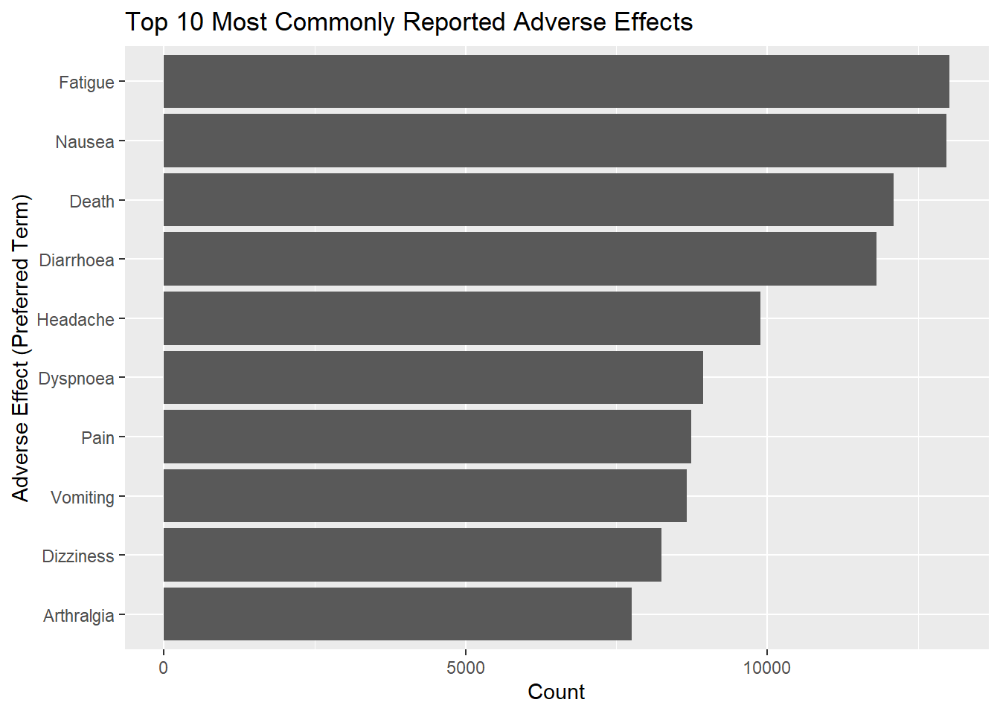
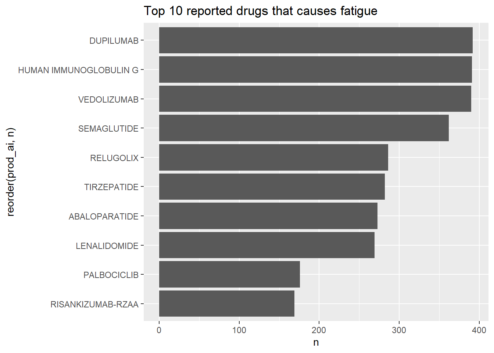
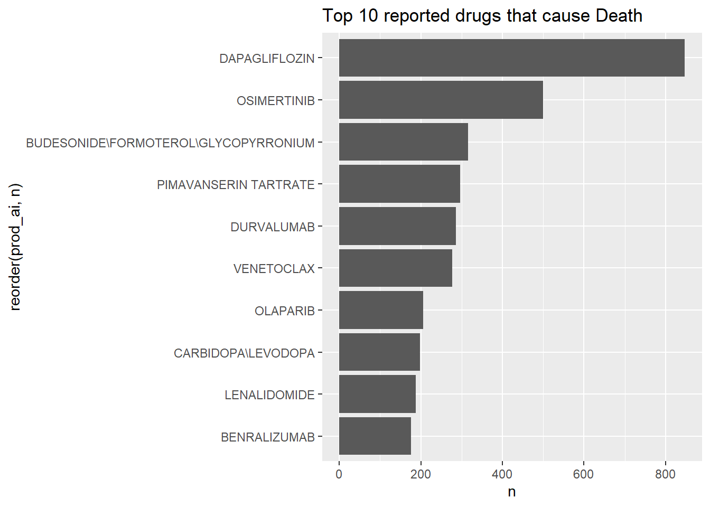

FDA有害事象報告システム（FAERS）を用いた医薬品安全性シグナルの探索的解析
はじめに
背景
FDA Adverse Event Reporting System（FAERS) は、米国食品医薬品局（FDA）が管理する公開型のファーマコビジランスデータベースである。本データベースには、医療従事者、製薬企業、および一般消費者から自発的に報告された医薬品有害事象情報が収録されている。
FAERSの主な目的は、市販後における医薬品の安全性監視（Post-Marketing Surveillance) である。臨床試験では医薬品の有効性や安全性に関する重要な情報が得られるが、対象患者数、観察期間、厳格な選択基準などの制約がある。そのため、まれな有害事象や長期的な安全性上の懸念は、医薬品が一般臨床で広く使用されるようになって初めて明らかになる場合がある。
ファーマコビジランスの目的は、さらなる調査が必要となる可能性のある安全性シグナルを検出することであり、安全性シグナルとは、ある医薬品と有害事象との関連性が、期待される頻度よりも高く報告されている可能性を示唆する情報を指す。こうしたシグナルを特定することで、研究者や規制当局は追加研究や継続的な安全性監視の優先順位を決定することができる。
一方で、FAERSデータの解釈には注意が必要である。FAERSは自発報告制度に基づいているため、報告バイアス、不完全な情報、重複報告、交絡因子などの影響を受ける。そのため、FAERS解析から得られる結果は因果関係を証明するものではなく、仮説生成（Hypothesis Generation) のための情報として解釈されるべきである。
目的
本研究の目的は、公開されているFAERSデータを用いて、記述統計解析および報告オッズ比（Reporting Odds Ratio: ROR）による不均衡解析を実施し、潜在的な医薬品安全性シグナルを探索できるかを検討することである。
具体的な目的は以下のとおりである。
- Rを用いて複数のFAERSデータセットを前処理および統合する。
- 頻繁に報告される有害事象を特定する。
- 特定の有害事象と医薬品との関連を探索する。
- 選択した医薬品と有害事象の組み合わせについて報告オッズ比（ROR）を算出する。
- 公開医療データを用いた再現可能なファーマコビジランス解析ワークフローを実演する。
方法
データソース
本研究では、FDA Adverse Event Reporting System（FAERS）の2025年第3四半期（Q3）の四半期データを使用した。
解析には以下の3つのデータセットを利用した。
- DEMO（患者背景情報）
- DRUG（医薬品情報）
- REAC（有害事象情報）
各データセットは、Rの tidyverse パッケージを用いて読み込んだ。
データ前処理
解析前に、データの品質および一貫性を向上させるため、複数の前処理を実施した。
欠損値の処理
欠損値が多数含まれ、本研究の目的に関連しない変数については削除した。
また、解析に必要な重要情報が欠落しているレコードについては、必要に応じて除外した。
データ型の統一
primaryid および caseid は数値ではなく識別子として機能するため、数値型から文字列型へ変換。
日付変数については、lubridate パッケージを用いて日付型へ変換した。
また、性別（sex）などのカテゴリ変数については factor 型へ変換した。
重複データの除去
重複レコードは distinct() 関数を用いて除去した。
外れ値の確認
入力ミスによる可能性が高い非現実的な値について確認を行った。
例えば、生物学的にあり得ない年齢が記録されている症例などは除外した。
フォローアップ報告への対応
FAERSには、同一症例に対する複数の報告バージョンが含まれる場合がある。
primaryid は個々の報告書を識別するIDであり、caseid は症例そのものを識別するIDである。
重複報告による影響を最小限に抑えるため、本研究では各症例について最新の報告のみを保持し、解析に使用した。
データ統合
DEMOデータセットを基準テーブルとして使用した。
まず DRUG データセットを primaryid によって DEMO と結合し、その後 REAC データセットを統合した。
また、報告された有害事象との関連性が高いと考えられる医薬品に焦点を当てるため、DRUGデータセットのうち Primary Suspect（PS） に分類された薬剤のみを解析対象とした。
Secondary Suspect（SS）および Concomitant（C）の薬剤は除外した。
データセット統合後、改めて重複レコードを確認し、必要に応じて除去した。
記述統計解析
有害事象の頻度は MedDRA Preferred Term（PT）を用いて集計した。
報告頻度が最も高い上位10件の有害事象を抽出し、ggplot2 を用いて可視化した。
また、臨床的な有害事象ではなく薬剤使用上の問題を表す用語については、一部の解析から除外した。
除外した用語は以下のとおりである。
- Off-label use（適応外使用）
- Drug ineffective（薬効不十分）
- Product dose omission issue（投与忘れ・投与漏れ）
さらに、特定の有害事象について、それらと関連して報告された医薬品の探索的解析を実施した。
報告オッズ比（Reporting Odds Ratio：ROR）
特定の有害事象が特定の医薬品に対して不均衡に報告されているかを評価するため、報告オッズ比（Reporting Odds Ratio：ROR）を算出した。
RORは、対象薬剤における特定有害事象の報告オッズを、データベース内のその他すべての薬剤における同一有害事象の報告オッズと比較する指標である。
解析には以下の2×2分割表を用いた。
| 対象有害事象 | その他の有害事象 | |
| 対象薬剤 | A | B |
| その他の薬剤 | C | D |
RORは以下の式により算出する。
ROR = (A × D) / (B × C)
RORおよび95%信頼区間の計算には pvda パッケージを使用した。
一般に、
ROR > 1 ：対象薬剤で当該有害事象が不均衡に多く報告されていることを示唆する。
ROR < 1 ：対象薬剤で当該有害事象が比較的少なく報告されていることを示唆する。
ただし、RORは因果関係を示すものではなく、安全性シグナル探索のための指標として解釈されるべきである。
結果
データセットの概要
データクリーニングおよび前処理後のデータ件数を以下に示す。
- 解析対象となった患者背景情報（DEMO）のレコード数：438445
- 解析対象となった医薬品情報（DRUG）のレコード数：438512
- 解析対象となった有害事象情報（REAC）のレコード数：1517088
- 統合後データセット（combined_clean）のレコード数：1151498
報告頻度の高い有害事象
報告頻度の高かった上位10件の有害事象を図1に示す。
図1. 報告頻度上位10件の有害事象
最も頻繁に報告された有害事象は以下のとおりであった。
- Fatigue
- Nausea
- Death
なお、上位に含まれていた用語の一部は臨床的な有害事象ではなく、薬剤使用上の問題を表すものであったため、以降の解析から除外した。
Fatigue（倦怠感）の解析
報告頻度が高かったことから、Fatigue（倦怠感）について追加解析を実施した。
Fatigueとともに報告される頻度が高かった医薬品を図2に示す。

図2. Fatigue報告と関連していた上位医薬品
Fatigueとともに最も多く報告された医薬品は以下のとおりであった。
- DUPILUMAB
- HUMAN IMMUNOGLOBULIN G
- VEDOLIZUMAB
DUPILUMAB と Fatigue に対する報告オッズ比（ROR)
Fatigue報告との関連性を評価するため、報告件数が最も多かった DUPILUMAB を対象として不均衡解析を実施した。
算出された報告オッズ比（Reporting Odds Ratio: ROR）は以下のとおりである。
- ROR：0.39
- 95%信頼区間：0.35 ～ 0.43
RORは1未満であり、 DUPILUMAB における Fatigueの報告頻度は、他の医薬品と比較して相対的に低いことが示唆された。
Death（死亡）報告の解析
臨床的に重大な有害事象である Death（死亡）について追加解析を実施した。
Deathとともに報告された頻度が高い医薬品を図3に示す。

図3. Death報告と関連していた上位医薬品
最も多くのDeath報告が確認された医薬品は DAPAGLIFLOZIN であった。
ただし、単純な報告件数のみでは適切な評価はできない。使用頻度の高い医薬品は、必然的に有害事象報告数も増加するためである。
DAPAGLIFLOZIN と Death に対する報告オッズ比（ROR）
Death報告数が最も多かった DAPAGLIFLOZIN を対象として不均衡解析を実施した。
算出された報告オッズ比（Reporting Odds Ratio: ROR）は以下のとおりである。
- ROR：8.12
- 95%信頼区間：7.51 ～ 8.78
RORは1を大きく上回っており、データベース内の他の医薬品と比較して、Dapagliflozinを含む報告ではDeathが不均衡に多く報告されていることが示された。
しかしながら、この結果は因果関係を示すものではない。
FAERSは自発報告制度に基づくデータベースであり、報告バイアスや交絡因子の影響を強く受ける。例えば、Dapagliflozinは糖尿病、心不全、慢性腎臓病などの患者に使用されることが多く、これらの患者集団はもともと死亡リスクが高い可能性がある。
したがって、本結果は安全性シグナルとして解釈されるべきであり、薬剤と死亡との因果関係を直接示すものではない。
考察
本研究では、公開されているFAERSデータを用いて、記述統計解析および不均衡解析を組み合わせた医薬品安全性シグナルの探索を実施した。
解析の結果、Fatigue（倦怠感）やDeath（死亡）など、複数の有害事象が高頻度で報告されていることが確認された。報告オッズ比（ROR）による追加解析の結果、単純な報告数だけでは判断を誤る可能性があり、不均衡解析を行うことで、安全性の兆候（シグナル）を評価するためのより詳しい情報が得られることが明らかになった。
本解析は、結果を解釈する際の臨床的文脈の重要性も示している。例えば、ある医薬品に関連する死亡報告数が多いからといって、その医薬品が死亡を直接引き起こしたことを意味するわけではない。特定の医薬品を投与される患者群は、もともと重篤な基礎疾患を有している場合があり、その結果として死亡リスクが高くなっている可能性がある。
したがって、本研究で観察された安全性シグナルは、さらなる検証を行うための出発点として解釈されるべきであり、因果関係を示す証拠として扱うべきではない。
限界
本研究にはいくつかの限界が存在する。
- 自発報告による報告バイアス
FAERSは自発報告制度に基づくデータベースであるため、報告バイアスの影響を大きく受ける。重篤な有害事象や注目を集めている有害事象は報告されやすい一方で、軽微な事象は報告されにくい可能性がある。
- 情報の不完全性および重複報告
報告内容には欠損情報や入力誤りが含まれる可能性がある。また、同一症例に対する複数回の報告が存在するため、重複報告の影響を完全に排除することは困難である。
- 発生率の推定ができない
FAERSには、医薬品を実際に使用した総患者数に関する情報が含まれていない。そのため、有害事象の発生率や絶対リスクを推定することはできない。
- 交絡因子への未対応
本解析では、年齢、併存疾患、疾患重症度、併用薬などの交絡因子について調整を行っていない。これらの因子が結果に影響を与えている可能性がある。
- 非調整RORの使用
本研究で算出したRORは単変量による不均衡解析であり、交絡因子を考慮していない。そのため、因果リスクの推定値として解釈すべきではない。
今後は、多変量ロジスティック回帰モデルを用いて調整済み報告オッズ比（Adjusted ROR）を算出し、交絡因子の影響を考慮した解析を実施することが望まれる。
結論
本研究では、Rを用いたFAERSデータ解析の再現可能なワークフローを構築した。
データクリーニング、データ統合、可視化、および報告オッズ比（ROR）解析を通じて、複数の潜在的な安全性シグナルを探索した。結果は、ファーマコビジランス研究における自発報告データベースの有用性と限界の双方を示している。
不均衡解析は、通常とは異なる報告パターンを検出する上で有用な手法である。しかしながら、その結果のみから因果関係を判断することはできず、疫学研究や臨床的検討によるさらなる検証が必要である。
参考文献
FDA Adverse Event Reporting System (FAERS) Quarterly Data Extract Files. U.S. Food and Drug Administration. Available at: https://fis.fda.gov/extensions/FPD-QDE-FAERS/FPD-QDE-FAERS.html